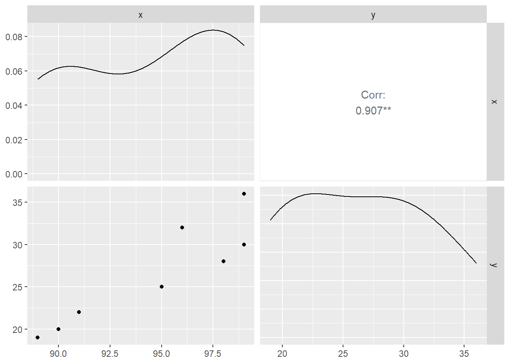

# LIS4273 - Module 5. Assignment# Robert Walsh# Professor Lingyao Li# Question A.# The director of manufacturing at a cookies company needs to determine# whether a new machine is able to produce a particular type of cookies# according to the manufacturer's specifications, which indicate that# cookies should have a mean of 70 and standard deviation of 3.5 pounds.# A sample of 49 cookies reveals a sample mean breaking strength# of 69.1 pounds.# A1. State the null and alternative hypothesis :# Null Hypothesis - Ho: The mean µ = 70# New machine is able to produce cookies within spec.# Mean breaking strength is equal to 70# Alt Hypothesis - Ha: The mean µ ≠ 70# New machine is not able to produce cookies within spec.# Mean breaking strength is not equal to 70# A2. Is there evidence that the machine is not meeting the manufacturer's# specifications for average strength?# Use a 0.05 level of significance.alpha <-0.05# Population Mean = 70a <-70# Standard Deviation = 3.5s <-3.5# Sample Size = 49n <-49# Sample Mean = 69.1xbar <-69.1# Calculate Test Statistic:z <- (xbar-a)/(s/sqrt(n))z
[1] -1.8
# Use qnorm() to determine critical values @ 0.05 alpha# Two tailed test would identify a 0.025 rejection area on each tailz.half.alpha <-qnorm(1-alpha/2)# The critical vales are - 1.96 and + 1.96z.half.alpha
[1] 1.959964
-z.half.alpha
[1] -1.959964
# Determine if the Test Statistic is in the rejection region.z <-z.half.alpha ||abs(z) > z.half.alpha
[1] FALSE
# -1.96 > -1.80 > 0 < 1.80 < 1.96# The Test Statistic falls between the critical values in the# 'do not reject Ho/Null' region. Therefore we can infer# that there is evidence that the machine is meeting the manufacturer’s # specifications for average strength.# A3. Compute the p value and interpret its meaning.# Use pnorm() to calculate the p value using the Test Statistic 'Z'# Then multiply the value by two for the two tailed test.p <-2*pnorm(z)# We get a p value of:p
[1] 0.07186064
# Test to see if this p value is greater than alpha.p > alpha
[1] TRUE
# Because the p value is greater than alpha, there is not enough# evidence to reject the Null hypothesis - Ho.# A4. What would be your answer in (A2) if the standard# deviation were specified as 1.75 pounds?alpha <-0.05# Population Mean = 70a <-70# Standard Deviation = 1.75s <-1.75# Sample Size = 49n <-49# Sample Mean = 69.1xbar <-69.1# Calculate Test Statistic:z <- (xbar-a)/(s/sqrt(n))z
[1] -3.6
# Use qnorm() to determine critical values @ 0.05 alpha# Two tailed test would identify a 0.025 rejection area on each tailz.half.alpha <-qnorm(1-alpha/2)# The critical vales are - 1.96 and + 1.96z.half.alpha
[1] 1.959964
-z.half.alpha
[1] -1.959964
# Determine if the Test Statistic is in the rejection region.z <-z.half.alpha ||abs(z) > z.half.alpha
[1] TRUE
# -3.60 > -1.96 > 0 < 1.96 < 3.60# The Test Statistic falls outside the critical values in the# 'reject Ho/Null' region. Therefore we can infer# that there is evidence that the machine is not meeting the # manufacturer’s specifications for average strength.# A5. What would be your answer in (A2) if the sample mean were # 69 pounds and the standard deviation is 3.5 pounds?alpha <-0.05# Population Mean = 70a <-70# Standard Deviation = 3.5s <-3.5# Sample Size = 49n <-49# Sample Mean = 69xbar <-69# Calculate Test Statistic:z <- (xbar-a)/(s/sqrt(n))z
[1] -2
# Use qnorm() to determine critical values @ 0.05 alpha# Two tailed test would identify a 0.025 rejection area on each tailz.half.alpha <-qnorm(1-alpha/2)# The critical vales are - 1.96 and + 1.96z.half.alpha
[1] 1.959964
-z.half.alpha
[1] -1.959964
# Determine if the Test Statistic is in the rejection region.z <-z.half.alpha ||abs(z) > z.half.alpha
[1] TRUE
# -2 > -1.96 > 0 < 1.96 < 2# The Test Statistic falls outside the critical values in the# 'reject Ho/Null' region. Therefore we can infer# that there is evidence that the machine is not meeting the # manufacturer’s specifications for average strength.
# Question B. If x̅ = 85, σ = standard deviation = 8, and n=64,# set up 95% confidence interval estimate of the population mean μ.# The 'Zc' Critical Value for a 95% Level of Confidence C = 1.96zc <-1.96# Sample Mean = 85xbar <-85# Standard Deviation = 8s <-8# Sample Size = 64n <-64# Calculate Upper Confidence Limit valuexBarPlusE <- xbar + (zc*(s/sqrt(n)))# Calculate Upper Confidence Limit valuexBarMinusE <- xbar - (zc*(s/sqrt(n)))# Therefore the 95% confidence interval would be:print("(83.04,86.96)")
[1] "(83.04,86.96)"
# There is a 95% probability that the population mean# would be in between these two values.
# Question C. Given the time spent on assignments each week# for the sampled girl group and boy group, respectively,library(GGally)
Loading required package: ggplot2
Registered S3 method overwritten by 'GGally':
method from
+.gg ggplot2
girls_grades <-c(89, 90, 91, 95, 98, 99, 96, 99)girls_time_spend <-c(19, 20, 22, 25, 28, 30, 32, 36)boys_grades <-c(86, 84, 92, 93, 93, 96, 98, 98)boys_time_spend <-c(15, 19, 22, 23, 25, 29, 30, 40)# Please perform the correlation analysis:# C1. Calculate the correlation coefficient (Pearson) between# time spent and grade for girls' and boys' datasets, respectively.# The Pearson correlation coefficient between time spent and grade# for the Girls' dataset:x<-c(girls_grades)y<-c(girls_time_spend)girlsData<-data.frame(x,y)round(cor(girlsData,method="pearson"),digits=2)
x y
x 1.00 0.91
y 0.91 1.00
# This result is close to 1 so a strong positive relation is implied.# The Pearson correlation coefficient between time spent and grade# for the Boys' dataset:x<-c(boys_grades)y<-c(boys_time_spend)boysData<-data.frame(x,y)round(cor(boysData,method="pearson"),digits=2)
x y
x 1.00 0.86
y 0.86 1.00
# This result is close to 1 so a strong positive relation is implied.# C2. Use ggpairs to plot the time spent and grade for# girls' and boys' datasets, respectively.# For the Girls' dataset:ggpairs( girlsData,upper =list(wrap("cor", size =5)),diag =list(continuous ="densityDiag"),)

# For the Boys' dataset:ggpairs( boysData,upper =list(wrap("cor", size =5)), diag =list(continuous ="densityDiag"),)